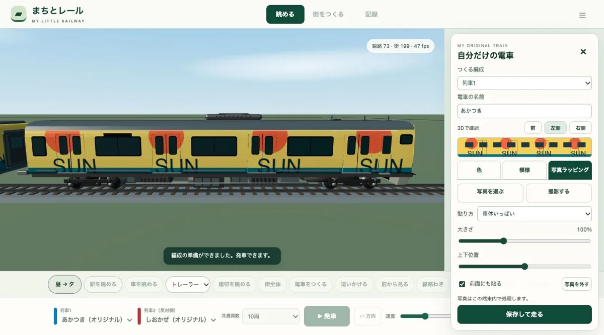

写真でラッピング電車を作る
自分の写真やイラストを、走る電車の側面や正面に貼って遊べます。

窓に隠れない場所を探す
「電車をつくる」で車種を選び、「写真」から画像を読み込みます。写真は端末内で処理します。窓やライトはそのまま残るので、主役の絵が窓のすぐ下に来るよう大きさと上下位置を調整します。
片側と前面を見比べる
小さなマークは片側で繰り返し、大きな絵は車体全体で見せると印象が変わります。「前面にも貼る」を試し、模型を回して正面を確認。完成したら名前を付けて保存します。
ゲームで試す →